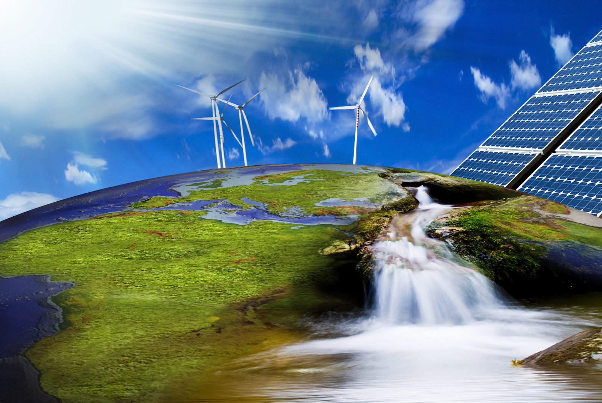

IMPLEMENTASI KEBIJAKAN ENERGI BARU DAN ENERGI TERBARUKAN DALAM RANGKA KETAHANAN ENERGI NASIONAL

Implementasi Kebijakan Energi Baru Dan Energi Terbaru adalah bahwa hasil pembanginan ketenagalistrikan harus dapat dimanfaatkan
sebesar-besarnya bagi kesejahteraan dan kemakmuran rakyat. 9
Dalam Undang-Undang Nomor 30 Tahun 2009 dijelaskan bahwa dalam
usdaha penyediaan tenaga listrik guna memenuhi peningkatan kebutuhan listrik
masyarakat di seluruh wilayah Indonesia maka dapat dilaksanakan oleh badan usaha
milik negara, badan usaha milik daerah, badan usaha swasta, koperasi, dan swadaya
masyarakat. Dalam Undang-Undang Ketenagalistrikan tersebut dijelaskan bahwa
badan usaha milik negara diberikan prioritas utama dalam melakukan usaha
penyediaan tenaga listrik untuk kepentingan umum. Salah satu badan usaha milik
negara tersebut yaitu Perusahaan Listrik Negara (PLN). PLN adalah perusahaan
yang diberi hak dan wewenang khusus serta tanggung jawab pembangkitan,
transmisi, dan distribusi tenaga listrik yang berlaku di seluruh wilayah Indonesia
sesuai dengan PP RI No. 8 Tahun 1972. 10 PLN berkewajiban menyediakan tenaga
listrik dalam jumlah yang cukup kepada masyarakat di seluruh Indonesia secara terus
menerus, baik dalam jangka pendek maupun jangka panjang.
Hasil dan Pembahasan
Kebijakan Pemerintah Mengenai Energi Baru dan Terbarukan menurut Hukum
Administrasi Negara
Pelaksanaan pemerintahan sehari-hari menunjukkan betapa badan atau pejabat
tata usaha negara seringkali menempuh berbagai langkah kebijaksanaan tertentu,
antara lain menciptakan apa yang kini sering dinamakan peraturan kebijaksanaan
(belerulidsregel, policy rule).11 Suatu peraturan kebijaksanaan pada hakekatnya
merupakan produk dari perbuatan tata usaha negara yang bertujuan “naar buiten
gebracht schriftelijk beleid (menampakkan keluar suatu kebijakan tertulis)” namun
tanpa disertai kewenangan pembuatan peraturan dari badan atau pejabat tata usaha
negara yang menciptakan peraturan kebutuhan tersebut. 12 Peraturan kebijakan pada
dasarnya diciptakan oleh pejabat administrasi negara untuk melaksanakan tugastugas pemerintah, yang merupakan konsekuensi atas negara hukum kesejahteraan
yang membebankan tugas yang sangat luas kepada pemerintah untuk
menyelenggarakan kesejahteraan rakyat (welfare state). (sumber informasi: journal.unnes.ac.id)